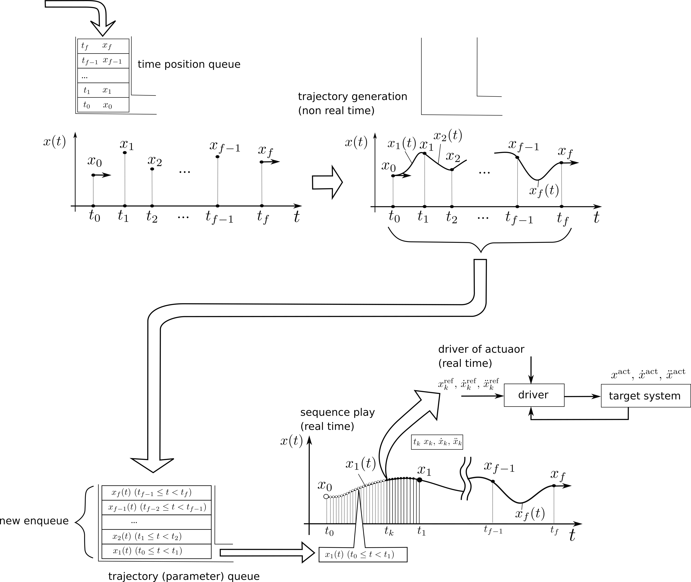
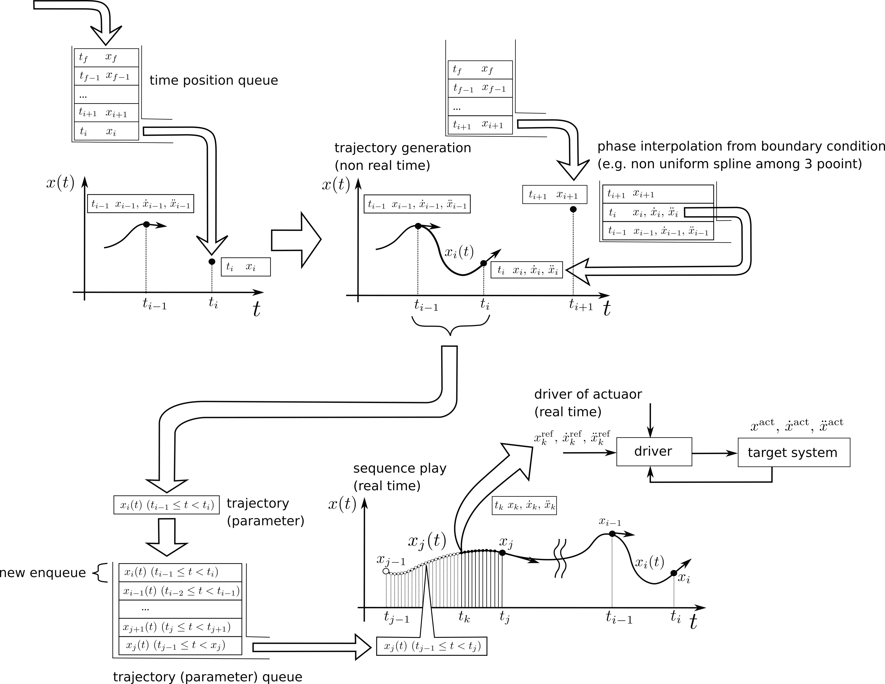
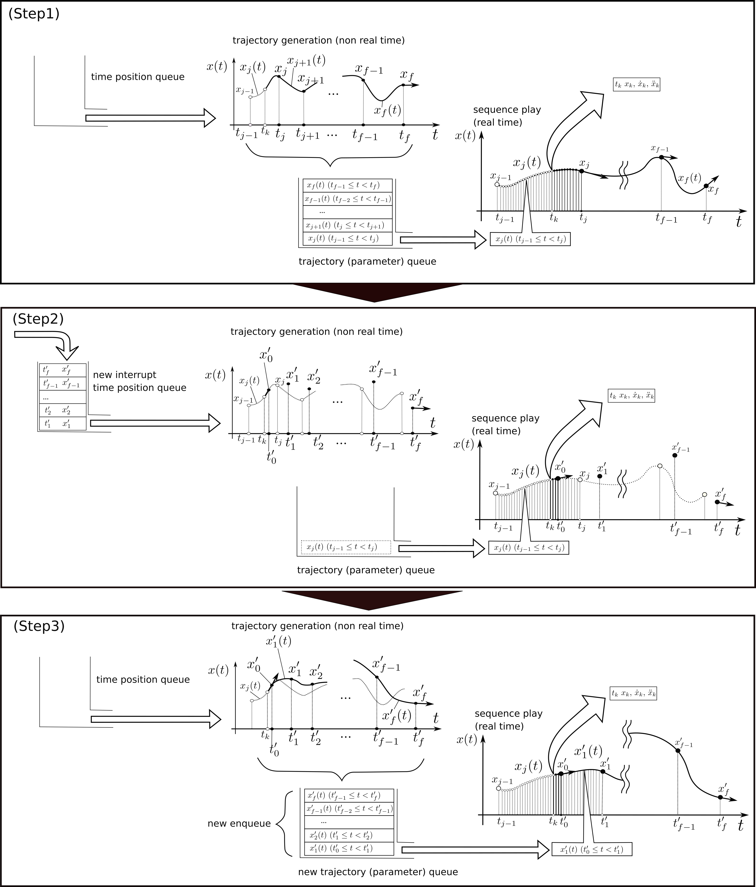

点の動作を計算機で表現し、操作したい。
話を簡単にして、ここでは１次元の点の移動を考える。
位置の変数を $x$ と表現する。
静止した点の表現とは異なり、動作する点の表現では位置は時間と共に発展する。
以下の漫画のように、位置の動作は座標軸１本だけでは１枚の図中に表現しきれない。
もう１本、時間 $t$ の座標軸を使って表現しよう。
すると位置 $x$ は時間 $t$ の関数 $x(t)$ として平面上に表現できる。
位置 $x$ は時間 $t$ の1次式、2次式、... n次式でモデル化して表現することができるだろうし、
sin関数やcos関数、指数関数 $e^{f(t)}$ や対数log関数でモデル表現することもできるだろう。
動作のモデル表現によって関数の式の取り方は様々である。
$$ \begin{array}{l} x(t) = -9.87 (t-1.5)(t-0.6) + 3.2 \\ x(t) = 7.9 \cdot \mathrm{sin} (t - 4 \pi ) \\ x(t) = e^{-3.1 \cdot t^2} + 5t - 4 \\ x(t) = 9t \ \mathrm{log} (t) \\ \cdots \ etc. \ \end{array} $$
一つの決まった(係数や関数の中身が固定された)式で表現するよりも、
様々な係数の式を時間と共に区分的に切り替えて変容できた方が多彩な表現を期待できる。
$$
\begin{array}{rl}
x(t | 0.0 \le t < 1.0) =& -0.0205976\ t^3 + 0.0205976\ t^2 - 1.0 \\
x(t | 1.0 \le t < 2.0) =& 0.150747\ (t-1.0)^3 - 0.0411951\ (t-1.0)^2 - 0.0205976\ (t-1.0) - 1 \\
x(t | 2.0 \le t < \cdots) =& \cdots
\end{array}
$$
このように区分多項式を用いて離散的な複数点間同士を任意の補間曲線で結ぶ、スプライン曲線(※)は動作のモデル表現として有用である。
(※) スプライン曲線は "Isaac Jacob Schoenberg, 'Contributions to the problem of approximation of equidistant data by analytic functions,' 1946" で最初に数学的に定義されたと言われている。本論文では以下のように定義されていた。
多項式曲線どうしを滑らかに接続したい。
言い換えると、接続される点で連続かつ微分可能となるように接続したい。
k 次の多項式どうしが境界で連続かつ微分可能となるように接続されるよう式を決定するには、 接続点(境界点)の k-1 次の値を知る必要がある。 このことを図に書いてみてみよう。
まず位置-時間平面の曲線 $x(t)$ を考えてみる。
曲線から曲線へある時刻 $t_i$ でスイッチするとき、その境界点の位置の値 $x_i$ が与えられたとする。
曲線 $x(t)$ を次の曲線へ境界点で連続かつ微分可能となるように接続したい。
しかし境界点の位置 $x_i$ の値を知るだけでは、２次以上の k 次多項式の曲線を連続かつ微分可能となるように接続するには情報が不足している。
時刻 $t_i$ の境界点 $x_i$ で連続かつ微分可能となるには、 その境界点の曲線の傾きを知る必要がある。
時間関数の境界点の傾きとは、その点での時間による位置の1階微分を意味する。
位置の時間微分とは速度である。位置の時間関数 $x(t)$ における傾きは、速度 $\dot{x}(t)$ に対応する。
物体の運動とは、位置の時間変化と同時に速度、加速度 、、の時間変化が起きる現象である。
境界点のような瞬時の点においても、位置の値と同時に速度、加速度の値が含まれる。
位置の点の傾きは、その時刻での位置を時間微分した値、速度値に対応する。
速度の点の傾きは、その時刻での速度を時間微分した値、加速度値に対応する。
境界の情報が決まれば、位置の時間曲線は時間多項式モデルの形状にしたがって決まる。
以上より、境界点で連続かつ微分可能となるよう接続できる時間多項式曲線とは、 以下の情報が揃っていることで決まるといえる。
どのような多項式モデルを選択するかはユーザの選択に委ねられる。
一方、境界点の n 階微分値とは、何階までの値が必要か？多項式の次数と同じ数なのか？それより少ないのか？
ユーザとしては、境界点の入力は 0 階微分値のみ、つまり位置の値のみで済むのが簡単だろう。
ユーザが境界点の 1 階微分値や 2 階微分値つまり速度値や加速度値まで指定したいケースというのは、よほど専門的なケースに限られるだろう。
ユーザは曲線形状を決める補間器モデルを選択する。
ex.) 3次元スプライン補間器を選択。
#include "cubic_spline_interpolator.hpp"
〜〜
SplineInterpolator* sp;
sp = new CubicSplineInterpolator();
続いて、ユーザは曲線が通過する制御点(境界点)、境界条件の入力をする。
境界条件の入力パターンは各補間器モデルで共通化することができる。
以下、入力パターンを挙げる。
ユーザは曲線の両端(境界)の２点を指定する。
ex.)
#include "cubic_spline_interpolator.hpp"
〜〜
SplineInterpolator* sp;
sp = new CubicSplineInterpolator();
double start_time = 0.0;
double finish_time = 1.5;
double start_position = 1.0;
double finish_position = 3.0;
double start_velocity = -0.1;
double finish_velocity = 0.0;
double start_acceleration = 0.4;
double finish_acceleration = 0.0;
RetCode ret = sp->generate_path( start_time, finish_time,
start_position, finish_position,
start_velocity, finish_velocity,
start_acceleration, finish_acceleration );
以上の入力より、補間器は自動で多項式のパラメータを計算し曲線を内挿して決定する。
計算方法は各モデルによって異なる。
ユーザは曲線が通過する開始-終了両端の２点、
および通過する中間点群を入力する。
このとき、開始-終了両端２点は速度、加速度までの境界条件を指定するが、
中間点は時刻-位置のみで良い、とする。
補間器は、中間点の速度、加速度をどうやって自動算出するか？が課題となる。
何かしらのモデル固有の拘束条件を用いて自動的に算出する必要がある。
中間点の速度が不明で、かつモデル固有の拘束条件が不明なとき、たとえば時刻-位置の３点が分かれば、丸み不均一スプラインを用いて中間の速度を自動補間する方法もある。
ただし、自動補間された速度を通る曲線は、制御点付近で位置の行き過ぎ量(オーバーシュート)が大きくなる場合もあり、ユーザにとって好ましくない結果となるかもしれない。
ユーザが各点の通過速度を１つずつ指定したい場合は、パターン１を利用する。
ex.)
#include "cubic_spline_interpolator.hpp"
〜〜
TPQueue tp_queue; // TP = time, position
tp_queue.push_on_dT( 0.0, -1.0 );
tp_queue.push_on_dT( 1.0, -1.0 );
tp_queue.push_on_dT( 2.0, 0.0 );
tp_queue.push_on_dT( 3.0, 10.1 );
const double start_velocity = 0.0;
const double finish_velocity = 0.0;
const double start_acceleration = 0.0;
const double finish_acceleration = 0.0;
SplineInterpolator* sp;
sp = new CubicSplineInterpolator();
sp->generate_path( target_tp,
start_velocity, finish_velocity,
start_acceleration, finish_acceleration );


